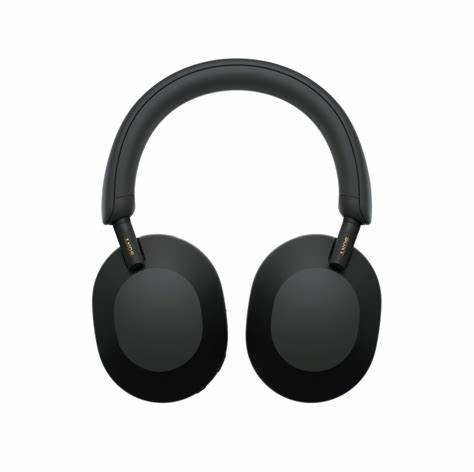

Sony WH-1000XM5
$349.99
Tipo: Auriculares inalámbricos con cancelación de ruido
Autonomía: Hasta 30 horas de batería
Conectividad: Bluetooth, NFC
Características: Control táctil, Asistente de voz
Disfruta de un sonido de calidad superior y una cancelación de ruido activa con los Sony WH-1000XM5.
Volver a la tienda Comprar